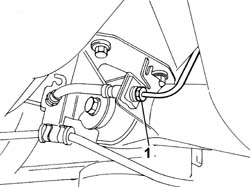
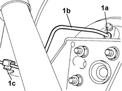

3330E69 RIGID PIPE (one), left or right, to the rear wheel cylinders - R.R.
- Path
- Procedures > 33 BRAKING SYSTEM > 3330 HYDRAULIC BRAKING SYSTEM > 3330E hydraulic brake system pipes > 3330E69 RIGID PIPE (one), left or right, to the rear wheel cylinders - R.R.
- Kind
- repair procedure (removal / refitting; the operation number is the code)
- Applies to
- all engines; all production periods
- Interactive page
- https://sloeber94.github.io/elrnDB-fPnd/en/#/2752752
Applies to: all engines; all production periods
 Removing
Removing
 Refitting
RefittingPlace the car on a lift.
Remove the protective cap on the brake caliper bleed valve.
Connect the collection system (pipe and reservoir) to the bleed valve on the brake caliper.
Operate the brake pedal until the brake fluid reservoir is empty
Raise the lift.
1. Undo the connector on the rigid pipe to the rear cylinders with the intermediate flexible section.

Applies to: all engines; all production periods
1. Undo connector (1a) on the rigid pipe to the rear brake cylinders (1a), release from the retaining clips (1c) on the rear axle and then remove.

Applies to: all engines; all production periods
Refitting
RemovingFit the rigid pipe to the rear brake cylinders.
Tighten the connector on the rigid pipe to the rear brake cylinder to torque.
 | Fastening | Component | Ø | Value (daNm) |
|---|---|---|---|---|
- | Connector | BRAKING SYSTEM FITTING/S | M10 | 1.6 |
Attach the pipe to the retaining clips on the rear axle.
Tighten the rigid pipe connector to the intermediate hose to torque.
| Fastening | Component | Ø | Value (daNm) |
|---|---|---|---|---|
- | Connector | BRAKING SYSTEM FITTING/S | M10 | 1.6 |
0010T64 brake and or clutch fluid check level and top up as necessary
Topics linked from this page (2)
- 0010T64 brake and or clutch fluid check level and top up as necessary
- 0010T65 hydraulic brake system bleed air